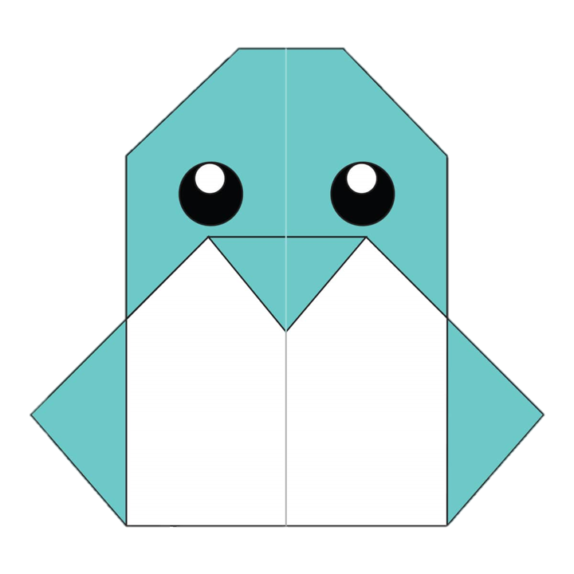

Origami Designs!
Created by Nargis
CAMEL! 🐪

Interesting Facts About Camels:
Did you know there are two types of camels: one humped camels and twohumped camels
Camels have three sets of eyelids and two rows of eyelashes to keepsand out of their eyes
Camels can completely shut their nostrils during sandstorms 😲
Click Here to Learn How to Make this Camel Origami
DOG! 🐕
Interesting Facts About Dogs:
Their sense of smell is at least 40x better than humans
Dogs can sniff at the same time as breathing
Dogs also dream, like us 😱
Click Here to Learn How to Make this Dog Origami
FISH! 🐟
Interesting Facts About Fish:
Fish have impressive memories
There are over 30000 known species of fish
Fish have gills that helps them extract oxygen from the water around them 🤯
Click Here to Learn How to Make this Fish Origami
PANDA! 🐼

Interesting Facts About Pandas:
They spend a lot of their day eating 😳
Prehistoric pandas lived up to 2 million years ago
Pandas have 6 toes to grasp bamboo
Click Here to Learn How to Make this Panda Origami
BABY PENGUIN! 🐧

Interesting Facts About Penguins:
Penguins lost the ability to fly millions of years ago
No penguins live at the North Pole 😱
Penguins spend around half their time in water and the other half on land
Click Here to Learn How to Make this Penguin Origami
PIGEON! 🐦
Interesting Facts About Pigeons:
Pigeons are incredibly complex and intelligent animals 🐧
They are highly sociable animals
They might be the first domesticated bird
Click Here to Learn How to Make this Pigeon Origami
OWL! 🦉

Interesting Facts About Owls:
Owls can turn their heads as much as 270 degrees
Owls are farsighted, meaning they can’t see things close to their eyesclearly
Owls are active at night (nocturnal) 😱
Click Here to Learn How to Make this Owl Origami
Thank You! 😊